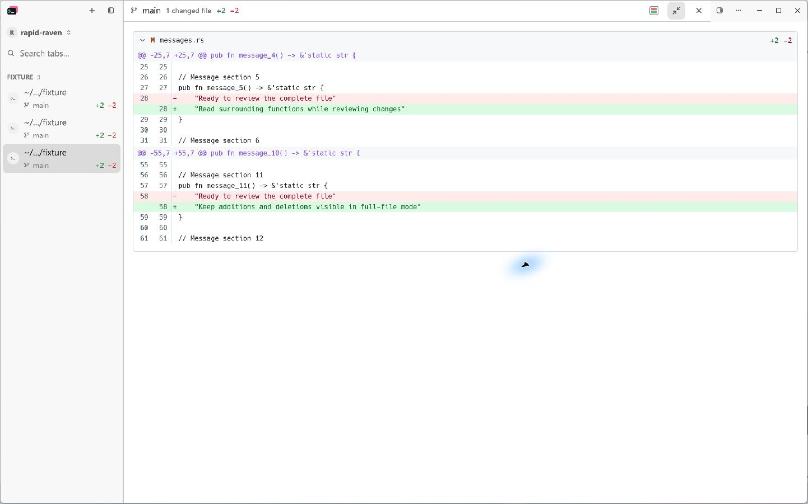
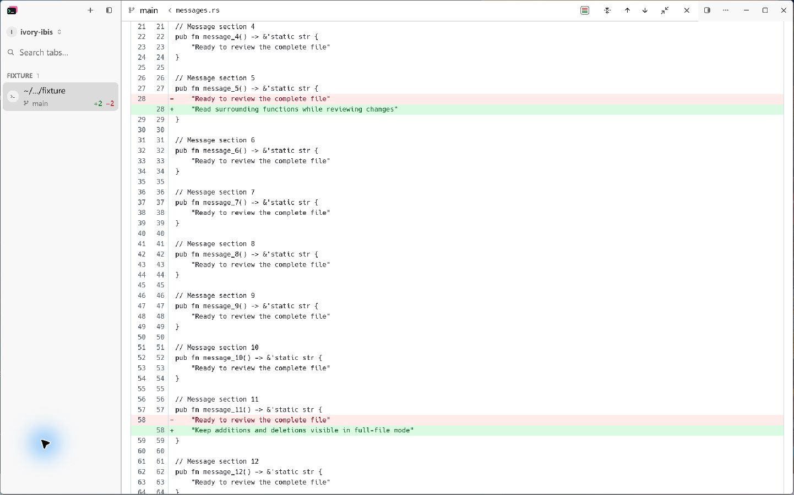
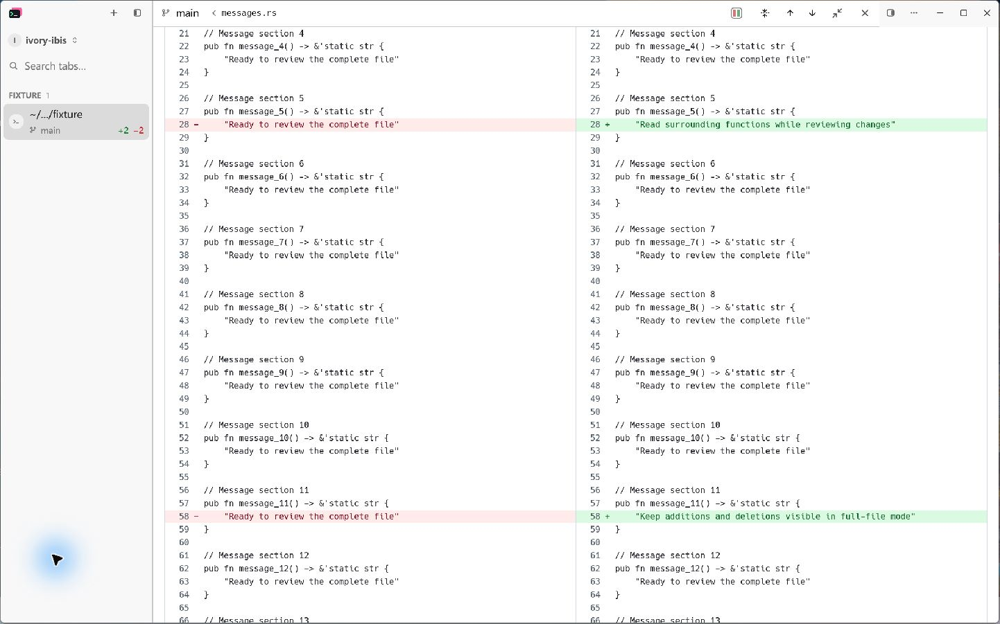
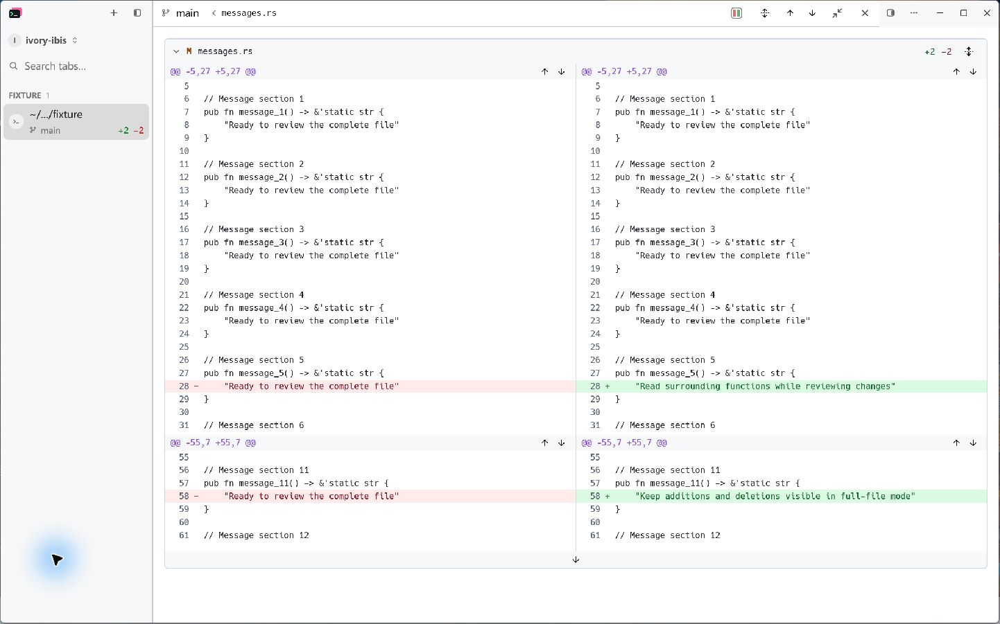

<!doctype html>
<html lang="zh-CN">
<meta charset="utf-8">
<meta name="viewport" content="width=device-width,initial-scale=1">
<title>Diff 全文上下文 · 实机对比</title>
<style>
  *{box-sizing:border-box}body{margin:0;padding:32px;background:#f4f5f7;color:#20242a;font:15px/1.5 system-ui,sans-serif}
  main{max-width:1800px;margin:auto}h1{font-size:26px;margin:0 0 8px}p{color:#66707c;margin:0 0 24px}
  .grid{display:grid;grid-template-columns:1fr 1fr;gap:24px}figure{margin:0;background:white;border:1px solid #dfe3e8;border-radius:10px;overflow:hidden}
  figcaption{padding:14px 18px;font-weight:600}img{display:block;width:100%;height:auto;border-top:1px solid #e8ebef}
  a{color:inherit}footer{margin-top:24px;color:#66707c}@media(max-width:900px){body{padding:16px}.grid{grid-template-columns:1fr}}
</style>
<main>
  <h1>Diff 全文上下文</h1>
  <p>同一文件，Windows 原生应用，Computer Use 操作截图。点击图片查看原图。</p>
  <div class="grid">
    <figure><figcaption>修改前 · 仅变更片段</figcaption><a href="diff-context-images/before.png"></a></figure>
    <figure><figcaption>修改后 · 全文统一视图</figcaption><a href="diff-context-images/full-unified.png"></a></figure>
    <figure><figcaption>修改后 · 全文并排视图</figcaption><a href="diff-context-images/full-split.png"></a></figure>
    <figure><figcaption>按需补充 · 前面20行</figcaption><a href="diff-context-images/context-20-lines.png"></a></figure>
  </div>
  <footer>全文展开／折叠、布局和修改导航均使用图标，悬停显示操作说明。</footer>
</main>
</html>
